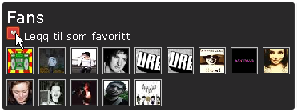
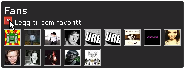
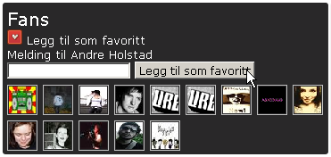

Favoritter på Urørt
Favoritter er artister på Urørt som du liker fremfor
andre artister. Når du legger til en artist som favoritt
(se instruksjoner under) vil denne vises på din egen
profilside under en boks med navn
Favoritter på Urørt. Dette gjør at man
til en hver tid kan holde rede på hvilke artister man liker.
For å legge til en artist som favoritt følger
du disse stegene:
-
Naviger deg frem til profilsiden til en artist som du vil legge
til som en av dine favoritter. I høyre side av siden
vil du finne en boks med tittel Fans. Her vises
en liste over andre Urørt brukere som har lagt denne
artisten til som favoritt. For å legge til denne artisten
som en favoritt klikker du på det røde ikoenet
med et lite hjerte på
(
 ).

).

-
Du får da opp en boks hvor du kan skrive inn en liten hilsen
til artisten. Uavhengig av om du velger å skrive inn en hilsen
klikker du på Legg til som favoritt knappen for
å bekrefte at du vil legge til denne artisten som en av dine
favoritter.

Dra tilbake til Urørt.